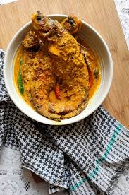

🐟 Pabda Shorshe (Pabda Fish in Mustard Gravy)

Ingredients
- 4 Pabda fish (cleaned and washed)
- 2 tbsp mustard seeds (yellow and black mixed)
- 2 green chilies
- 1/2 tsp turmeric powder
- 1/2 tsp red chili powder (optional)
- Salt to taste
- 2 tbsp mustard oil
- Water as required
Instructions
- Soak mustard seeds for 15 mins and grind with green chilies into a smooth paste. Add a pinch of salt to prevent bitterness.
- Marinate fish with turmeric and salt. Set aside for 10 mins.
- Heat mustard oil in a pan until smoking hot. Fry fish lightly and remove.
- In the same oil, add mustard paste and a bit of water. Cook for 3–4 mins.
- Add turmeric, red chili powder, salt, and more water for gravy. Bring to boil.
- Add fried fish and green chilies. Simmer for 5–6 mins.
- Drizzle a little raw mustard oil on top before serving.
Serve With
- Steamed rice
- Lentils or light vegetable sides
💡 Tip: Do not overcook the mustard paste, and use a mix of yellow and black mustard for balance.